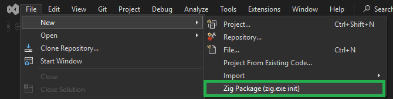
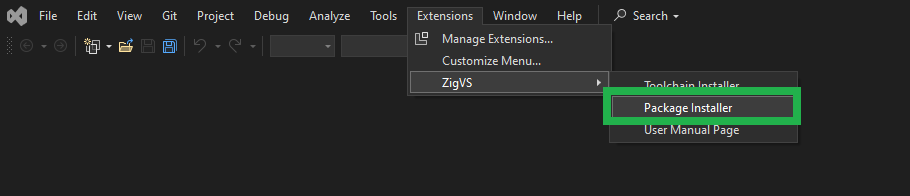
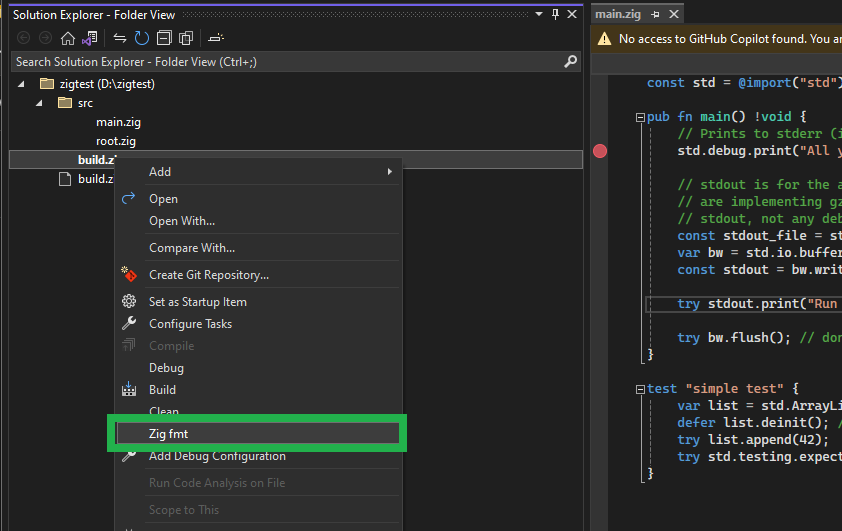
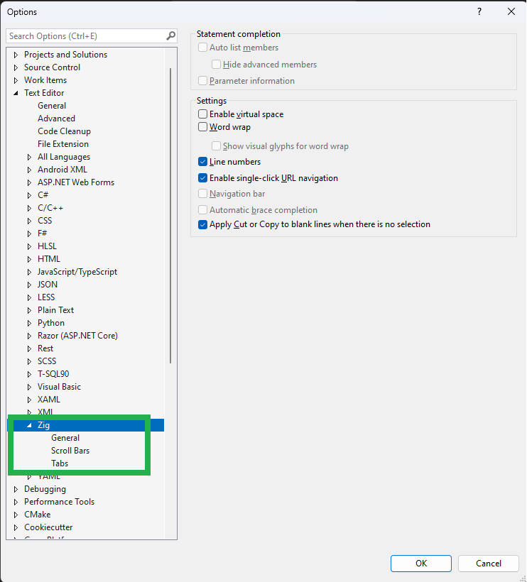
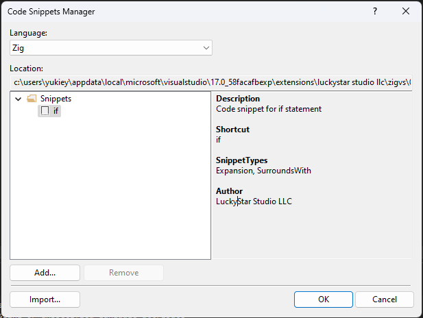
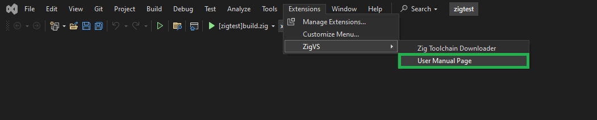

- List of Supported Features
- How to Set Up with Zig Tool chain Installer
- How to Set Up Manually
- How to use
- Open Folder Mode:
- Project File Mode
- Cross-platform Build
- Cross-platform Debugging
- Cross-platform Debugging (Linux ubuntu on WSL)
- Cross-platform Debugging (Linux ubuntu on none WSL)
- Cross-platform Debugging (Android)
- Cross-platform Debugging (iOS)
- Cross-platform Debugging (Serial Port Debugger)
- Testing
- Profiler
- Package Installer
- Formatting
- Editor Setting
- Syntax Highlighting
- Snippets
- Formatting
- Help
- Questions, Requests, etc.
- License
- Extension Name
- Publisher
- Version History
List of Supported Features
Editor
Settings(General,ScrollBars,Tabs) [✔]
Syntax highlighting using Syntaxes file [✔]
Auto-completion using Snippets files [✔]
Support for Language Server Features [✔]
Completions [✔]
Hover [✔]
Goto definition/declaration [✔]
Find references [✔]
Rename symbol [✔]
Selection ranges [✔]
Folding regions [✔]
Code actions [✔]
Inlay hints [✔]
Diagnostics [ ]
Document symbols [ ]
Semantic token highlighting [ ]
Automatically inserts a closing Bracket [✔]
Document Formatting using 'zig fmt' [✔]
Navigation
Object Browser [ ]
Build
Build [✔]
OS selection [✔]
Architecture selection [✔]
WebAssembly [✔]
Optimization selection [✔]
GUI configuration [✔]
C/C++ integration [✔]
Embedding resources [✔]
Build.zig generation [✔] (Project file mode)
Build.zig.zon generation [✔] (Project file mode)
ZigPackage [✔] (Open folder mode)
Debug
Step execution [✔]
Set breakpoints [✔]
Variable inspection [✔]
Cross-platform Debugging [✔] [new!!]
WebAssembly [ ]
Hot Reload [ ]
Profiling
CPU Usage, Memory Usage, Events, File IO [✔]
Testing
Run code tests using Test Explorer [✔]
Unit Test Debugging [✔] [new!!]
Templates
Package, Project, file [✔]
Project file mode [✔]
Open folder mode [✔]
Zig Tool-chain Installer [✔]
Zig Package Installer [✔] [new!!]
Help [✔] How to Set Up with Zig Tool chain Installer
Install ZigVS from [Extensions] → [Manage Extension] or from Visual Studio Marketplace
[Extensions] → [ZigVS] → [Zig Tool chain Installer]

3.ToolChainInstaller window will be opened
Select Zig Tool chain Version
Select ZLS Version
Set Install Directory
If you specify a folder without write permissions, the Install button will not be activated. Please restart Visual Studio with Administrator privilegesSelect if you set Environment Value ‘PATH’
- Once everything is set up, the Install button will become active, so press the Install button

- The progress and results of the installation will be displayed in the output window

- You might need restart your Visual Studio
Note: If you see “Access to the path ‘….’ is denied”, the following
scenarios might be considered
* File in use: Please close the application that is opening the
file
* Directory without write permission: Please restart Visual Studio as
Administrator
How to Set Up Manually
Install ZigVS from [Extensions] → [Manage Extension] or from Visual Studio Marketplace
Zig Compiler:
Download Zig and extract it to your desired location.
ZigVS has been tested with Zig ver 0.13.0.ZLS Language Server:
Download Zig Language Server (zls) and place it in the same directory as the Zig Compiler.
Note: The compatibility issue that previously existed between Visual Studio 2022 and ZLS has been resolved as both Visual Studio 2022 and ZLS have been fixed. It can now be used in Visual Studio 2022 without any modifications to ZLS.
- Set the ZIG_TOOL_PATH environment variable to a directory with Zig compiler and ZLS binaries (The path specified for ZIG_TOOL_PATH needs to end with a backslash ’' )
How to use
ZigVS supports Open folder mode and Project file mode
- Open folder mode
Open a folder with an existing zig project.
Uses the zig build system with a build.zig file.
Build Tool：zig.exe
Compiler：zig.exe
Build File：Build.zig
Source Code：.zig .cpp .c
GUI/Editor：Visual Studio 2022 Project file mode
Create and manage zig projects (.zigproj) using the VS2022 IDE.
Use the zig compiler along with MSBuild and VS2022 project management.
Link C/C++ libraries and zig libraries in a VS2022 solution file.Installing the Desktop Development with C++ module via Visual Studio Installer is necessary.
Build Tool：MSBuild.exe
Compiler：zig.exe
Build File：Zig Project file (extension .zigproj) or Zig Project file create the build.zig
Source Code：.zig .cpp .c
GUI/Editor：Visual Studio 2022 Open Folder Mode:
To start Open Folder Mode, do one of the following in Visual Studio:
A. If creating a new Zig package:
A-1. Select [File] → [New] → [Zig Package (zig.exe init)].
A-2. Select the directory and package name, choose whether to open the folder, and then press the create button.
B. If selecting a template
B-1. Use the wizard and select [Create a new project].
The project template supports both project mode and open folder mode.
C. If opening an existing Zig Package:
C-1. Use the wizard and select [Open a local folder], then choose the folder containing Build.zig.
D. Select [File] → [Open] → [Folder] and choose the folder containing Build.zig.
To select the Build.zig to use, right-click on it and choose [Set as Startup Item].
[Build], [Debug], [Start] button, and [Configuration] drop down will become active for you to start your work.
If you want to change settings, select [Tools] → [Options] and make changes in the Options window under [ZigVS].
Project File Mode
To start Project File Mode, do one of the following in Visual Studio:
Note Installing the Desktop Development with C++ module via Visual Studio Installer is necessary.
A. If creating a new project:
a-1. Use the wizard and select [Create a new project] or [File] → [New].
B. If opening an existing project:
b-1. Select [Open a project or solution] or [File] → [Open] → [Project/Solution].
If you want to change settings, right-click on [ZigProject file] in [Solution Explorer], select [Property], and [Project Property Page] will appear.
Cross-platform Build
Open Folder Mode
Select CPU and OS from the Standard Menu barProject File Mode
Select CPU from the Stan dared Menu bar
Select OS from [Project Property Page] → [Build] → [Assembly] → [OS]
Cross-platform Debugging
- Need to make LaunchOption.xml, see the schema file
Cross-platform Debugging (Linux ubuntu on WSL)
- Generate the key pair on Windows.
Run ssh-keygen with out a passphrase.
id_rsa and is_rsa.pub will be generated.
ssh-keygen -t rsa -b 4096
dir %USERPROFILE%\.ssh- Install openssh-server and gdb on linux
sudo apt update
sudo apt install openssh-server gdb- Change ssh server port from 22 to 2022 on linux
sudo sed -i -E 's,^#?Port.*$,Port 2022,' /etc/ssh/sshd_config
sudo service ssh start- Copy ‘id_rsa.pub’ from windows to linux
scp -P 2022 %USERPROFILE%\.ssh\id_rsa.pub [linux user name]@[linux ip address]:/home/[linux user name]/.ssh/authorized_keys- reboot ssh server.
sudo service ssh restart- Create a text file named ‘LaunchOptions.xml’ in the current project directory.
<?xml version="1.0" encoding="utf-8"?>
<PipeLaunchOptions xmlns="http://schemas.microsoft.com/vstudio/MDDDebuggerOptions/2014"
PipePath="C:\Windows\System32\OpenSSH\ssh.exe"
PipeArguments="-p 2022 -i C:\Users\[windows user name]\.ssh\id_rsa [linux user name]@[linux ip address] -t gdb --interpreter=mi"
TargetArchitecture="x64"
MIMode="gdb"
DebuggerPath="/usr/bin/gdb"
Environment="VAR1=value1;VAR2=value2"
ExePath="/mnt/[path to the target on windos]"
ExeArguments=""
WorkingDirectory="/home/[linux user name]"
LaunchCompleteCommand="exec-run">
<AdditionalSOLibSearchPath>/usr/lib;/usr/local/lib</AdditionalSOLibSearchPath>
</PipeLaunchOptions>- Select MIEngie as a Visual Studio Debug Engine
Open Folder Mode
Select OS from [Tools] → [Options] → [ZigVS] → [Folder Mode] → [Debug][Debug Engine] MIEngine
[MIEngine launch Options file name] LaunchOptions.xmlProject File Mode
Select OS from [Project Property Page] → [Debug][Debug Engine] MIEngine
[MIEngine launch Options file name] LaunchOptions.xml
Cross-platform Debugging (Linux ubuntu on none WSL)
- Generate the key pair on Windows.
Run ssh-keygen with out a passphrase.
id_rsa and is_rsa.pub will be generated.
ssh-keygen -t rsa -b 4096
dir %USERPROFILE%\.ssh- Install openssh-server and gdb on linux
sudo apt update
sudo apt install openssh-server gdb- Copy ‘id_rsa.pub’ from windows to linux
scp %USERPROFILE%\.ssh\id_rsa.pub [linux user name]@[linux ip address]:/home/[linux user name]/.ssh/authorized_keys- reboot ssh server.
sudo service ssh restart- Create a text file named ‘LaunchOptions.xml’ in the current project directory.
<?xml version="1.0" encoding="utf-8"?>
<PipeLaunchOptions xmlns="http://schemas.microsoft.com/vstudio/MDDDebuggerOptions/2014"
PipePath="C:\Windows\System32\OpenSSH\ssh.exe"
PipeArguments="-p 22 -i C:\Users\[windows user name]\.ssh\id_rsa [linux user name]@[linux ip address] -t gdb --interpreter=mi"
TargetArchitecture="x64"
MIMode="gdb"
DebuggerPath="/usr/bin/gdb"
Environment="VAR1=value1;VAR2=value2"
ExePath="[path to the target on linux]"
ExeArguments=""
WorkingDirectory="/home/[linux user name]"
LaunchCompleteCommand="exec-run">
<AdditionalSOLibSearchPath>/usr/lib;/usr/local/lib</AdditionalSOLibSearchPath>
</PipeLaunchOptions>- Select MIEngie as a Visual Studio Debug Engine
Open Folder Mode
Select OS from [Tools] → [Options] → [ZigVS] → [Folder Mode] → [Debug][Debug Engine] MIEngine
[MIEngine launch Options file name] LaunchOptions.xmlProject File Mode
Select OS from [Project Property Page] → [Debug][Debug Engine] MIEngine
[MIEngine launch Options file name] LaunchOptions.xml
- Set the command the output to the target machineL
Open Folder Mode
[Tools] → [Options] → [ZigVS] → [Folder Mode] → [Pre Debug][Pre Debug Command] scp [Pre Debug Command Arguments] -P 22 [target file fullpath] [Linux User Name]@[Linux Machine IP Addredd]:/home/[Linux User Name]/[your project directory]
Project File Mode
[Project Property Page] → [Debug] → [PreDebug][Pre Debug Command] scp [Pre Debug Command Arguments] -P 22 [target file fullpath] [Linux User Name]@[Linux Machine IP Addredd]:/home/[Linux User Name]/[your project directory]
Tips
Please check if the target file on linux has executable attribute.
The following command can be useful for troubleshooting when things don’t work as expected.
service ssh statusgrep sshd /var/log/auth.logCross-platform Debugging (Android)
- Create a text file named ‘LaunchOptions.xml’ in the current project directory.
<?xml version="1.0" encoding="utf-8"?>
<!-- Android Launch -->
<AndroidLaunchOptions xmlns="http://schemas.microsoft.com/vstudio/MDDDebuggerOptions/2014"
Package="com.example.hellojni"
LaunchActivity=".HelloJni"
SDKRoot="c:\android-bundle\sdk"
NDKRoot="c:\android-ndk"
TargetArchitecture="arm"
IntermediateDirectory="c:\android-ndk\samples\hello-jni\obj\local\armeabi-v7a"
AdditionalSOLibSearchPath=""
DeviceId="emulator-5554"/><?xml version="1.0" encoding="utf-8"?>
<!-- Android Attach -->
<AndroidLaunchOptions xmlns="http://schemas.microsoft.com/vstudio/MDDDebuggerOptions/2014"
Package="com.example.hellojni"
Attach="true"
SDKRoot="c:\android-bundle\sdk"
NDKRoot="c:\android-ndk"
TargetArchitecture="arm"
IntermediateDirectory="c:\android-ndk\samples\hello-jni\obj\local\armeabi-v7a"
AdditionalSOLibSearchPath=""
DeviceId="emulator-5554"/>Cross-platform Debugging (iOS)
- Create a text file named ‘LaunchOptions.xml’ in the current project directory.
<?xml version="1.0" encoding="utf-8"?>
<IOSLaunchOptions xmlns="http://schemas.microsoft.com/vstudio/MDDDebuggerOptions/2014"
RemoteMachineName="Chucks-mac-mini"
PackageId="riesco.Sample"
vcremotePort="3000"
IOSDebugTarget="device"
TargetArchitecture="x86"
AdditionalSOLibSearchPath=""/>Cross-platform Debugging (Serial Port Debugger)
- Create a text file named ‘LaunchOptions.xml’ in the current project directory.
<?xml version="1.0" encoding="utf-8"?>
<SerialPortLaunchOptions xmlns="http://schemas.microsoft.com/vstudio/MDDDebuggerOptions/2014"
Port="COM1" TargetArchitecture="arm"/>Testing
To perform tests, select [Test] → [Test Explorer] to open the Test Explorer window. If .zig source code includes unit tests, their filenames will be listed.

Profiler
- [Debug] > [Start Debugging] (or Start on the toolbar, or F5).
When the app finishes loading, the Summary view of the Diagnostics Tools appears. If you need to open the window, click Debug > Windows > Show Diagnostic Tools.
- When you choose Record CPU Profile, Visual Studio will begin recording your functions and how much time they take to execute. You can only view this collected data when your application is halted at a breakpoint.

Package Installer
1, [Extensions] → [ZigVS] → [Zig Package Installer]

2, Browse to the repository and branch that you want to install in
the WebView.
3, Select a Installation Method from the drop-down.
Currently, git and unzip are working correctly.
4. Once everything is set up, the Install button will become active, so
press the Install button

Formatting
- Right-click in the solution explorer and select ‘zig fmt’

Editor Setting
- [Tools]→[Options]→[Text Editor]→[Zig]

Syntax Highlighting
Example of changing Literals and Operators

You can change the colors and fonts of the Syntax Highlighting. It is possible to create a more color-coded and visually appealing screen than the default settings of Visual Studio. The following Display Items can be modified.
- Plain Text
- Comment
- Keyword
- Literal
- Operator
- String
- Type
[Tool]→[Environment]→[Fonts and Colors]→[Display items]

Snippets
- Open Snippet manager
[Tool] → [Code Snippets Manager] → [Zig]

- Insert Snippets
Right-click in the code editor → Snippets → [Insert Snippet]

Note: Code snippets: what they are and how to add one
Formatting
Right-click in the solution explorer and select ‘zig fmt’
Help
[Extensions] → [ZigVS] → [User Manual Page]

Questions, Requests, etc.
Please use the Q&A page on Visual Studio Marketplace. Support is available in both English and Japanese.
License
Refer to the LICENSE.txt file for licensing information.
Extension Name
ZigVS
Publisher
LuckyStar Studio LLC
Version History
Version 0.14.1.0 (2025/06/09):
Supported Zig 0.14.1.
Modifications to the file and folder layout to prepare the ZigVS source code for public release. https://github.com/luckystar-studio/ZigVS
Compatibility:
Visual Studio 2022 17.14.3
Zig Tool chain: zig-windows-x86_64-0.14.1.zip
ZLS Language Server: zls-windows-x86_64-0.14.0.zip
Version 0.14.0.1 (2025/03/07):
Supported Zig 0.14.0.
The compatibility issue between Visual Studio 2022 and ZLS has been resolved, so there is no longer a need to use a special version of ZLS.
Compatibility:
Visual Studio 2022 17.13.2
Zig Tool chain: zig-windows-x86_64-0.14.0.zip
ZLS Language Server: zls-windows-x86_64-0.14.0.zip
Version 0.13.0.13 (2025/02/22):
We modified the behavior so that if the Output window is not displayed when running the tool-chain or package installer, it will be shown automatically. This ensures that progress can be monitored.
Automatically insert the corresponding closing character when pressing (, {, or [ under certain conditions.
Compatibility:
Visual Studio 2022 17.13.1
Zig Tool chain: zig-windows-x86_64-0.13.0.zip
ZLS Language Server: 0.13.0.VisualStudioCompatible
Version 0.13.0.12 (2024/08/17):
The user manual for ZigVS, which was included in the Visual Studio extension package,
has been removed from the package to reduce its size by hosting it on GitHub.
Updated the packages that ZigVS depends on.
Corrected some spelling errors.
Fixed minor bugs.
Compatibility:
Visual Studio 2022 17.11.0
Zig Tool chain: zig-windows-x86_64-0.13.0.zip
ZLS Language Server: 0.13.0.VisualStudioCompatible
Version 0.13.0.11 (2024/08/15):
In the previous version of ZigVS, unit tests could only be managed and executed on
a file-by-file basis from the Test Explorer. Now, they can be managed and executed individually.
Additionally, it is now possible to debug unit tests from the Test Explorer.
Compatibility:
Visual Studio 2022 17.10.5
Zig Tool chain: zig-windows-x86_64-0.13.0.zip
ZLS Language Server: 0.13.0.VisualStudioCompatible
Version 0.13.0.10 (2024/08/11):
You can now toggle inlay hints on and off using Alt + F1.
We fixed the issue where typing '_' would prematurely end the completion.
Compatibility:
Visual Studio 2022 17.10.5
Zig Tool chain: zig-windows-x86_64-0.13.0.zip
ZLS Language Server: 0.13.0.VisualStudioCompatible
Version 0.13.0.9 (2024/07/08):
In Open Folder mode
The debugger and tests now function correctly even when you open a folder higher than the one containing build.zig.
We have accelerated the startup of the debugger from the second time onward.
Compatibility:
Visual Studio 2022 17.10.3
Zig Tool chain: zig-windows-x86_64-0.13.0.zip
ZLS Language Server: 0.13.0.VisualStudioCompatible
Version 0.13.0.7 (2024/07/07):
Due to a bug in the extension installer, an exception occurred when creating a new project unless the user manually installed Desktop Development with C++. We have fixed the installer to ensure that the necessary components are installed automatically.
We have improved the error messages to make the situation clearer when zig.exe or zls.exe cannot be found.
We have made the behavior of the key to confirm auto-complete similar to C#.
Compatibility:
Visual Studio 2022 17.10.3
Zig Tool chain: zig-windows-x86_64-0.13.0.zip
ZLS Language Server: 0.13.0.VisualStudioCompatible
Version 0.13.0.3 (2024/06/18):
We have fixed the issue where you had to type the key twice for auto complete.
Compatibility:
Visual Studio 2022 17.10.1
Zig Tool chain: zig-windows-x86_64-0.13.0.zip
ZLS Language Server: 0.13.0.VisualStudioCompatible
Version 0.13.0.2 (2024/06/17):
You can now create a new Zig package by going to [File] → [New] → [Zig Package].
The project template now includes build.zig, so the project can be built from both build.zig and .zigproj files.
Compatibility:
Visual Studio 2022 17.10.1
Zig Tool chain: zig-windows-x86_64-0.13.0.zip
ZLS Language Server: 0.13.0.VisualStudioCompatible
Version 0.13.0.1 (2024/06/11):
We have released the compatible ZIGVS version due to the release of ZIG and ZLS version 0.13.0.
We have added support for building WebAssembly (WASM).
We have modified the message for cases where tests are skipped due to compilation errors.
We have improved the icons and logos.
Compatibility:
Visual Studio 2022 17.10.1
Zig Tool chain: zig-windows-x86_64-0.13.0.zip
ZLS Language Server: 0.13.0.VisualStudioCompatible
Version 0.12.0.4 (2024/05/26):
1, The project file generated for new projects now supports incremental builds. This prevents unnecessary zig builds.
2, The UI for setting modules in the project properties has been changed to allow multi-line editing instead of a single line.
3, The 'zig fetch' command now runs correctly for package installation through the package installer. Previously, the command was given a GitHub zip file, but zig couldn't handle the zip properly. Switching to .tar.gz resolved the issue.
Compatibility:
Visual Studio 2022 17.10.0
Zig Tool chain: zig-windows-x86_64-0.12.0.zip
ZLS Language Server: 0.12.0.VisualStudioCompatible
Version 0.12.0.3 (2024/05/23):
We have added an explanation on how to further color-code using Syntax Highlighting.
To fix the issue with ZLS not functioning correctly, the recommended setup method for the Zig Tool chain has been changed from using the ZIG_TOOL_PATH environment variable to using the PATH environment variable. Consequently, the installer has also been modified to set the PATH.
Compatibility:
Visual Studio 2022 17.10.0
Zig Tool chain: zig-windows-x86_64-0.12.0.zip
ZLS Language Server: 0.12.0.VisualStudioCompatible
Version 0.12.0.2 (2024/05/13):
In ZigVS unit tests, we use the 'zig.exe test' command,
but the result output format of the test command was changed in Zig 0.12.0.
We have fixed cases where ZigVS could not correctly retrieve the test results.
Additionally, if the output of 'zig.exe test' changes in the future and ZigVS can no longer read it,
an error message will now be displayed to indicate this.
Compatibility:
Visual Studio 2022 17.9.6
Zig Tool chain: zig-windows-x86_64-0.12.0.zip
ZLS Language Server: 0.12.0.VisualStudioCompatible
Version 0.12.0.1 (2024/05/07):
We have released the compatible ZIGVS version due to the release of ZIG and ZLS version 0.12.0.
Replace zig logo
Compatibility:
Visual Studio 2022 17.9.6
Zig Tool chain: zig-windows-x86_64-0.12.0.zip
ZLS Language Server: 0.12.0.VisualStudioCompatible
Version 0.1.8 (2024/03/23):
cross-platform build and debug
fix a bug ZigVS disables CMake Project Debugger
Compatibility:
Visual Studio 2022 17.9.3
Zig Tool chain: zig-windows-x86_64-0.12.0-dev.1849+bb0f7d55e.zip
ZLS Language Server: 0.12.0.VisualStudioCompatible
Version 0.1.6 (2024/02/24):
Add Package Installer
Compatibility:
Visual Studio 2022 17.9
Zig Tool chain: zig-windows-x86_64-0.12.0-dev.1849+bb0f7d55e.zip
ZLS Language Server: 0.12.0.VisualStudioCompatible
Version 0.1.5 (2024/01/28):
Support Visual Studio Profiling Tools
Minor Bug fix
Compatibility:
Visual Studio 2022 17.8.5
Zig Tool chain: zig-windows-x86_64-0.12.0-dev.1849+bb0f7d55e.zip
ZLS Language Server: 0.12.0.VisualStudioCompatible
Version 0.1.4 (2024/01/21):
Add Snippets Manager
Version 0.1.3.1 (2024/01/14):
ToolChainInstaller
Check if install path already exists
Extract empty directories during install
Version 0.1.3 (2024/01/14):
Project Property
Header files directory field handles both relative and absolute paths
Add library list and library directory fields
Implemented modules and dependencies field
Fix an issue where the User Manual does not appear in some cases
Add Zig Tool chain Installer Window
Version 0.1.2 (2024/01/07):
Add file icon
Support document formatting
Version 0.1.1 (2023/12/30):
Fixed not being able to specify the output destination in project mode
Add editor settings
Version 0.1 (2023/12/26):
Initial release
Compatibility:
Zig Tool chain: zig-windows-x86_64-0.12.0-dev.1849+bb0f7d55e.zip
ZLS Language Server: 0.12.0.VisualStudioCompatible